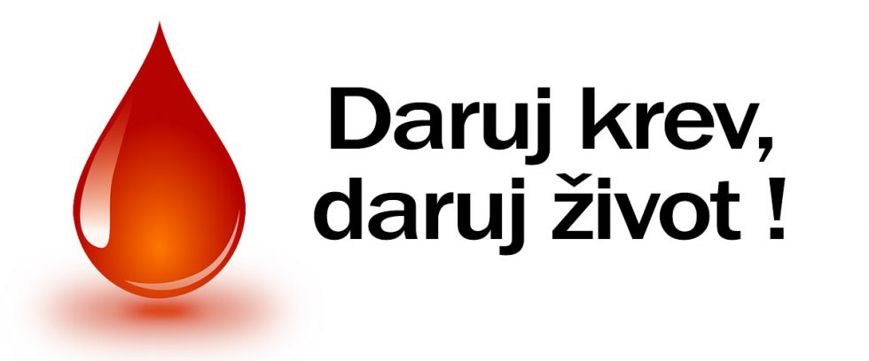

Daruj život
Proč darovat? Dárců není nikdy dost. Máme štěstí, že žijeme v zemi, kde nějací jsou. v rozvojových zemích jsou na tom hůře. Člověk znenadání onemocní a bude potřebovat více krve a plazmy či léky z ní vyrobené. S rozvojem dalších léčebných metod roste stále i potřeba krve získávané od dárců. V průměru dostane každý občan za svůj život 4x krevní transfúzi a 12x preparát vyrobený z krve!
